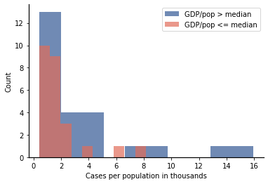
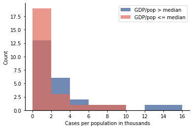
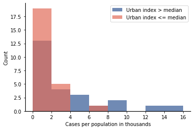

Visualizing Multiple Data Sets - Part 2: Histograms for Partitioned Data
Contents
3.5. Visualizing Multiple Data Sets - Part 2: Histograms for Partitioned Data#
Now we return to our Covid data set and apply what we have learned about partitions and summary statistics to set up what we call binary comparisons: these are comparisons between two groups. As before, we begin by importing the data from the CSV file:
import matplotlib.pyplot as plt
import numpy as np
import pandas as pd
df = pd.read_csv(
"https://raw.githubusercontent.com/jmshea/Foundations-of-Data-Science-with-Python/main/03-first-data/covid-merged.csv"
)
df.set_index("state", inplace=True)
df["cases_norm"] = df["cases"] / df["population"] * 1000
In the following subsections, we will partition the data based on normalized gdp and how urban the state’s population is. In each case, we will partition the data into two sets by comparing the metric being studied to the median value of that metric. Here, we have chosen median because it will result in the data set being partitioned into subsets that are approximately equal in size.
3.5.1. Partitioning Based on GDP#
The gross domestic product (GDP) provides a measure of how affluent a state is. As we expect that GDP will increase along with population, we first add normalized GDP (in millions) per capita (in thousands) to our dataframe[1].
df["gdp_norm"] = df["gdp"] / df["population"] * 1000
We will partition the data around the median of the normalized GDP, which is
m_gdp = df["gdp_norm"].median()
m_gdp
61.04737129841516
To partition the data let’s first see what happens when a numerical column of a dataframe is compared to a value:
df["gdp_norm"] > m_gdp
state
Alabama False
Alaska True
Arizona False
Arkansas False
California True
Colorado True
Connecticut True
Delaware True
Florida False
Georgia False
Hawaii True
Idaho False
Illinois True
Indiana False
Iowa True
Kansas True
Kentucky False
Louisiana False
Maine False
Maryland True
Massachusetts True
Michigan False
Minnesota True
Mississippi False
Missouri False
Montana False
Nebraska True
Nevada False
New Hampshire True
New Jersey True
New Mexico False
New York True
North Carolina False
North Dakota True
Ohio False
Oklahoma False
Oregon True
Pennsylvania True
Rhode Island False
South Carolina False
South Dakota True
Tennessee False
Texas True
Utah True
Vermont False
Virginia True
Washington True
West Virginia False
Wisconsin False
Wyoming True
Name: gdp_norm, dtype: bool
Pandas returns a series that contains Boolean values indicating whether the comparison for the value at each index was true or false. We can use such a series to partition our dataframe if we pass it as the index (in square brackets) to the data frame. So, we can create a dataframe with states that have population higher than the median as follows:
higher_gdp = df[df["gdp_norm"] > m_gdp]
higher_gdp
| cases | population | gdp | urban | cases_norm | gdp_norm | |
|---|---|---|---|---|---|---|
| state | ||||||
| Alaska | 353 | 731545 | 54674.7 | 66.02 | 0.482540 | 74.738670 |
| California | 50470 | 39512223 | 3205000.1 | 94.95 | 1.277326 | 81.114143 |
| Colorado | 15207 | 5758736 | 400863.4 | 86.15 | 2.640684 | 69.609616 |
| Connecticut | 27700 | 3565287 | 290703.0 | 87.99 | 7.769361 | 81.537054 |
| Delaware | 4734 | 973764 | 77879.4 | 83.30 | 4.861548 | 79.977695 |
| Hawaii | 609 | 1415872 | 97001.1 | 91.93 | 0.430124 | 68.509795 |
| Illinois | 52918 | 12671821 | 893355.5 | 88.49 | 4.176038 | 70.499378 |
| Iowa | 7145 | 3155070 | 196247.4 | 64.02 | 2.264609 | 62.200648 |
| Kansas | 4305 | 2913314 | 178605.1 | 74.20 | 1.477699 | 61.306505 |
| Maryland | 21825 | 6045680 | 432997.8 | 87.20 | 3.610016 | 71.621025 |
| Massachusetts | 62205 | 6892503 | 603209.6 | 91.97 | 9.025023 | 87.516770 |
| Minnesota | 5136 | 5639632 | 389503.7 | 73.27 | 0.910698 | 69.065446 |
| Nebraska | 4332 | 1934408 | 133201.0 | 73.13 | 2.239445 | 68.858793 |
| New Hampshire | 2146 | 1359711 | 88014.8 | 60.30 | 1.578277 | 64.730520 |
| New Jersey | 118652 | 8882190 | 642967.7 | 94.68 | 13.358417 | 72.388420 |
| New York | 309696 | 19453561 | 1791566.8 | 87.87 | 15.919759 | 92.094542 |
| North Dakota | 1067 | 762062 | 57471.9 | 59.90 | 1.400149 | 75.416305 |
| Oregon | 2510 | 4217737 | 258692.6 | 81.03 | 0.595106 | 61.334455 |
| Pennsylvania | 48224 | 12801989 | 818448.6 | 78.66 | 3.766915 | 63.931363 |
| South Dakota | 2450 | 884659 | 56051.9 | 56.65 | 2.769429 | 63.359893 |
| Texas | 29072 | 28995881 | 1861581.9 | 84.70 | 1.002625 | 64.201598 |
| Utah | 4672 | 3205958 | 196639.4 | 90.58 | 1.457287 | 61.335613 |
| Virginia | 15846 | 8535519 | 566529.4 | 75.45 | 1.856478 | 66.373164 |
| Washington | 14814 | 7614893 | 624861.4 | 84.05 | 1.945398 | 82.057804 |
| Wyoming | 559 | 578759 | 40764.3 | 64.76 | 0.965860 | 70.433980 |
Note the exceptionally high normalized case rate for New York (15.92) and New Jersey (13.4).
By changing the inequality to \(\le\), we can create a dataframe with states at or below the median population:
lower_gdp = df[df["gdp_norm"] <= m_gdp]
lower_gdp
| cases | population | gdp | urban | cases_norm | gdp_norm | |
|---|---|---|---|---|---|---|
| state | ||||||
| Alabama | 7068 | 4903185 | 230750.1 | 59.04 | 1.441512 | 47.061267 |
| Arizona | 7648 | 7278717 | 379018.8 | 89.81 | 1.050735 | 52.072199 |
| Arkansas | 3281 | 3017804 | 132596.4 | 56.16 | 1.087214 | 43.938042 |
| Florida | 33683 | 21477737 | 1126510.3 | 91.16 | 1.568275 | 52.450139 |
| Georgia | 25431 | 10617423 | 634137.5 | 75.07 | 2.395214 | 59.726122 |
| Idaho | 2016 | 1787065 | 85791.1 | 70.58 | 1.128107 | 48.006704 |
| Indiana | 18099 | 6732219 | 384871.7 | 72.44 | 2.688415 | 57.168624 |
| Kentucky | 4708 | 4467673 | 218426.1 | 58.38 | 1.053792 | 48.890351 |
| Louisiana | 28044 | 4648794 | 259079.3 | 73.19 | 6.032532 | 55.730432 |
| Maine | 1095 | 1344212 | 68984.9 | 38.66 | 0.814604 | 51.319955 |
| Michigan | 41348 | 9986857 | 543489.4 | 74.57 | 4.140242 | 54.420465 |
| Mississippi | 6815 | 2976149 | 117642.3 | 49.35 | 2.289872 | 39.528364 |
| Missouri | 7563 | 6137428 | 332659.7 | 70.44 | 1.232275 | 54.201809 |
| Montana | 452 | 1068778 | 54034.7 | 55.89 | 0.422913 | 50.557459 |
| Nevada | 5053 | 3080156 | 181751.6 | 94.20 | 1.640501 | 59.007271 |
| New Mexico | 3411 | 2096829 | 106914.4 | 77.43 | 1.626742 | 50.988612 |
| North Carolina | 10507 | 10488084 | 601787.9 | 66.09 | 1.001804 | 57.378249 |
| Ohio | 18027 | 11689100 | 703368.9 | 77.92 | 1.542206 | 60.173059 |
| Oklahoma | 3618 | 3956971 | 201604.3 | 66.24 | 0.914336 | 50.949148 |
| Rhode Island | 8621 | 1059361 | 62335.4 | 90.73 | 8.137925 | 58.842453 |
| South Carolina | 6095 | 5148714 | 251664.5 | 66.33 | 1.183791 | 48.879099 |
| Tennessee | 10506 | 6829174 | 380823.0 | 66.39 | 1.538400 | 55.764138 |
| Vermont | 866 | 623989 | 34320.2 | 38.90 | 1.387845 | 55.001290 |
| West Virginia | 1126 | 1792147 | 78480.5 | 48.72 | 0.628297 | 43.791330 |
| Wisconsin | 6973 | 5822434 | 353935.5 | 70.15 | 1.197609 | 60.788237 |
As expected, the two dataframes have the same size:
len(higher_gdp), len(lower_gdp)
(25, 25)
Let’s generate histograms for case data for both the higher GDP and lower GDP data sets. We plot them on the same axes to make it easier to compare them:
plt.hist(higher_gdp["cases_norm"], alpha=0.7, label="GDP/pop > median")
plt.hist(lower_gdp["cases_norm"], alpha=0.7, label="GDP/pop <= median")
plt.legend()
plt.xlabel("Cases per population in thousands")
plt.ylabel("Count")
Text(0, 0.5, 'Count')

An issue that arises when plotting histograms on the same axes is that it becomes hard to compare values when the histograms use different bins. For example, from about 0.5 to 1.8, the histogram for the higher GDP group has a single bar with 13 entries. On the other hand, the histogram for the lower GDP group has two bars, but together those two bars sum up to 19.
To resolve this issue, lets just pass bins that span the region as the bins for each histogram:
mybins = np.arange(0, 18, 2)
mybins
array([ 0, 2, 4, 6, 8, 10, 12, 14, 16])
plt.hist(higher_gdp["cases_norm"], alpha=0.7, label="GDP/pop > median", bins=mybins)
plt.hist(lower_gdp["cases_norm"], alpha=0.7, label="GDP/pop <= median", bins=mybins)
plt.legend()
plt.xlabel("Cases per population in thousands")
plt.ylabel("Count")
Text(0, 0.5, 'Count')

The histogram shows that states with GDPs over the median have higher case counts in general (for instance, the larger bars in the range 2-5), as well as larger maximum values (above 8). One reason for this might be that states with higher GDPs may have network effects, where more of the population interacts with a larger number of people. For instance, such states may have more of their population employed in office jobs and likely to travel for their work.
When an effect is observed visually, we usually want to quantify that effect in some way and then test whether any observed difference is “real” (rather than just caused by randomness). Let’s compare the average of the normalized number of cases for these two different groups:
hgdp_mu = higher_gdp["cases_norm"].mean()
lgdp_mu = lower_gdp["cases_norm"].mean()
hgdp_mu, lgdp_mu
(3.511232264232122, 1.9258062634390536)
There is a substantial difference between the two average values. However, the average is more sensitive to extreme values, such as the large normalized case rates of New York and New Jersey. One way to deal with this is to use a statistic that is not as sensitive to extrema; for example, the median is such a statistic:
higher_gdp["cases_norm"].median(), lower_gdp["cases_norm"].median()
(1.9453983135416348, 1.3878449780364717)
Exercise
A new data frame can be created that excludes New York and New Jersey using the following command:
df2 = df.drop(["New York", "New Jersey"])
Using this reduced data set, partition the data around the median normalized GDP, plot the histograms for the normalized Covid rates of the two partitions, and find the average normalized Covid rates for the two partitions.
Exercise
Partition the data around the mean GDP. Plot the histograms and find the averages for this new grouping.
3.5.2. Partitioning Based on Urban Index#
Some of the networking effects mentioned in the previous section may be associated with populations living in large, urban areas. In this section, we partition the data based on the urban index, which is the percentage of the population that is living in an urban area. As before, we start by finding the median urban index for the states:
m_urban = df["urban"].median()
m_urban
73.735
Now we use that median to partition the data and plot the histograms:
higher_urban = df[df["urban"] > m_urban]
lower_urban = df[df["urban"] <= m_urban]
plt.hist(
higher_urban["cases_norm"], alpha=0.7, label="Urban index > median", bins=mybins
)
plt.hist(
lower_urban["cases_norm"], alpha=0.7, label="Urban index <= median", bins=mybins
)
plt.legend()
plt.xlabel("Cases per population in thousands")
plt.ylabel("Count")
Text(0, 0.5, 'Count')

As with normalized GDP, a substantial difference in distribution of normalized number of Covid cases is seen for states that are more urban versus less urban. The average normalized case rates for these partitions are:
higher_urban["cases_norm"].mean(), lower_urban["cases_norm"].mean()
(3.8908656178327066, 1.5461729098384682)
Again, a substantial difference in averages is observed. Some additional tests are left as exercises for the reader:
Exercise
Compare the medians for these two groups.
Exercise
Remove New York and New Jersey from the data set and recreate the histograms and averages for the partitioned data set without those two states.